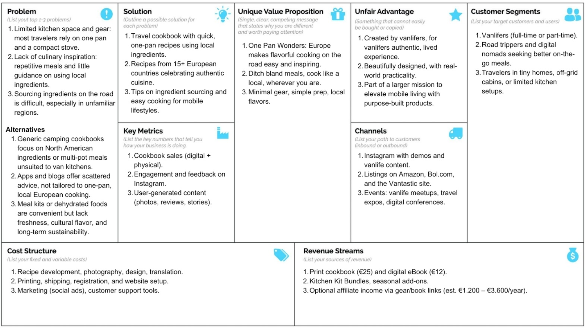

General Information
This branded website is publicly available at buas-media-interactive.github.io/my-website
This website was created by…
- Mara Taks (ID: 235667)
- Linde Verhees (ID: 234208)
- Senna Smulders (ID: 234927)
- Claire Soeterbroek (ID: 224403)
Content
| # | Student ID | Value | Name and link of content |
|---|---|---|---|
| 1. | 235667 | Going whenever, wherever | Corporate |
| 2. | 234208 | Something out of nothing | About Us |
| 3. | 234927 | Journey over destination | Home |
| 4. | 224403 | Adventure Made Easy | Product Page |
Production
Design Elements
Please provide a list of design elements alongside their justifications:
-
Colour scheme:
- #945D40 – This earthy brown carries warm, red undertones, creating a welcoming and friendly feel.
- #ABA198 – A warm, neutral gray that adds softness and calmness to the design.
- #617A55 – A deep forest green symbolizing nature and van life.
- #5B8873 – Mid-tone green for visual depth and storytelling variety.
- #AAC8A7 – Light green for freshness and a natural feel.
- Font choice: Playfair Display – A playful yet classy serif font that fits our friendly and professional tone.
- User interface patterns: Grid layouts, carousel image sections (for visuals), and a sticky menu for seamless navigation.
- Navigation and content structure: The site will be structured in clear sections (Home, Journal, About, Shop, Contact), each reflecting a logical flow and clean user experience.
- Design choices support:
- Brand values and personality: Natural colors and serif font communicate groundedness, freedom and creativity.
- Marketing and communication: Emphasizes approachability, trust, and a love for nature and simplicity.
- Unique value proposal: A travel product that is beautiful, easy to use, and deeply rooted in lifestyle aesthetics.
Credits
Please find below the credits for third-party elements used in this project:
- HTML Template: Based on the default BUas template: prj4-group-template.
-
UX Patterns: All UX patterns (carousel, navbar, cards, etc.) were built using the Bootstrap 5.3.3 framework.
Source: getbootstrap.com/docs/5.3 - Fonts: Fonts used are imported via Google Fonts:
-
Images:
- All Instagram-style mockups, product photos, and videos were created by students in the team.
- Stock and placeholder imagery sourced from Unsplash and credited as follows:
- Image of a campervan: Photo by Fabien Rousselot
Testing Report
To ensure the usability and effectiveness of our website, we conducted a series of user tests. This report outlines our goals, methods, and the results, along with the improvements implemented based on user feedback.
Testing Goals
Our main goals were to:
- Test the clarity and structure of the navigation system.
- Evaluate the overall visual appeal and readability of the website (e.g., color contrast, font choice, image placement).
- Assess whether the product offering (One Pan Wonders) was clearly communicated and appealing to our target audience.
- Identify any usability issues or confusing elements in the layout or content.
Testing Methods
- Participants: We tested the website with 5 users aged 25–42, who fit within our target audience of vanlife enthusiasts and part-time travelers.
- Setting: Testing was done in-person on campus using laptops, and one participant joined remotely via screen share (Google Meet).
- Protocol: Participants were asked to complete the following tasks:
- Navigate to the product page and describe the main offering in their own words.
- Find the Instagram account link and review the branding consistency.
- Give general feedback on the design and usability.
Their screen actions were observed, and notes were taken manually during each session.
Testing Results
Positive findings:
- Visual identity: Users loved the earthy color palette and said it matched the vanlife theme well.
- Layout: The clear structure and visual balance between text and images helped users navigate easily.
- Call to action: The “More posts” button and links to Instagram were noticed quickly and considered useful.
Areas for improvement (ranked by priority):
- Navigation bar visibility: Some users did not immediately notice the sticky menu; this was improved by increasing contrast and spacing.
- Homepage hero section: One user mentioned that the image sizing looked off. We adjusted the CSS to correct the images scale.
- Product description clarity: One participant misunderstood the purpose of the book; we revised the introductory text to highlight the travel-friendly and one-pan focus more clearly.
Improvements implemented:
- Adjusted contrast and padding in the navbar.
- Improved responsive design for image layout in the hero section.
- Edited product description text for clarity and relevance.
Marketing
Reference list can be found in the appendix section.
Marketing can also be found in Marketing Folder
Context of campaign and promotional activities
Campaign
Campaign Vantastic is a brand for people aged 25 to 45 who live in their van full-time or part-time and who are looking for adventure, freedom and simplicity. Vantastic’s marketing campaign combines practical and inspiring content shared through posts, stories and reels on Instagram. The message of our campaign is that vanlife can be easy and fun, wherever your journey takes you. The content is designed to be relatable, adventurous, fun, and to make life on the road easier. Our vision is to inspire a world where van life is effortless, freeing, and truly adventurous. To maintain consistency and strengthen our brand identity, we have used the same colour palette across all our posts (brown, grey and green).
The Communication and Media Plan can be found in the appendix section.
Objectives
To ensure the success of our Vantastic marketing campaign, we have established the following key objectives that will guide our content and engagement strategy:
Reach
• By the 13th of April 2025, we aim to reach 100 unique Instagram users with brand content by posting 3x per week. This will help us increase brand awareness and expand our reach within the vanlife community.
Affect
• By the 13th of April 2025, we want our audience to feel deeply connected to our brand, leaving them excited and eager for more after each post. Our goal is to foster a sense of community and adventure through engaging content that strengthens our audience's connection to Vantastic, whether it's about cooking, vanlife, or the freedom of the open road. By inspiring curiosity and excitement, we want our followers to see Vantastic as essential to their journey, leading them to purchase our cookbook as the perfect tool to enhance their vanlife experience.
Response
• By the 13th of April 2025, we want to receive a total of 150 likes and 50 comments across all Instagram posts. These engagement metrics will help us measure how well our content resonates with our audience and fosters interaction within our community.
These objectives are crafted to not only measure our performance but also to ensure that every piece of content we create helps build a more engaged and loyal Vantastic community. By consistently analyzing our results, we’ll refine our strategy to stay aligned with both our brand goals and the changing needs of our audience.
Channels/platforms
Our target audience consists of individuals aged 25 to 45 who live part-time or full-time in their vans, seeking adventure, freedom, and simplicity. According to CBS (2020), 96% of people in this age group actively use social media. To effectively engage with this audience, we've chosen Instagram as our platform. Notably, 33% of Instagram users are between the ages of 28 and 43 (Meeuwissen, 2025), which aligns perfectly with our target demographic.
Campervan enthusiasts are highly active on Instagram. The hashtag #vanlife, for example, was used 6.5 million times in January 2020 (De Boer, 2020), and that number has now surged to 17.8 million. This rapid growth highlights the increasing popularity of the vanlife community. For us, this presents an opportunity to use Instagram to gain brand visibility and connect with an increasingly large, engaged audience.
Additionally, according to De Haas (2025), the best time to post on Instagram is between 7:00 and 9:00 AM on weekdays, when people quickly scroll through their feed before going to work. Also between 11:00 and 14:00 PM, right before lunch, many users are on Instagram to relax. Therefore, we decided to post during these peak times to generate the most engagement.
CBS. (2020, December 18). Wie gebruikt het vaakst sociale media? - Nederland in cijfers 2020. https://longreads.cbs.nl/nederland-in-cijfers-2020/wie-gebruikt-het-vaakst-sociale-media/
De Boer, A. (2020, July 7). Campers in trek bij jongere doelgroep: #vanlife groeit hard. Metronieuws.nl. https://www.metronieuws.nl/lifestyle/reizen/2020/07/campers-in-trek-bij-jongere-doelgroep-vanlife-groeit-hard/
De Haas, K. (2025, March 14). [2025] Wat is de beste tijd om te posten op social media? Sommet Media. https://sommetmedia.nl/blogs/social-media/wat-is-het-beste-tijdstip-om-te-posten-op-social-media/
Meeuwissen, S. (2025, February 3). Instagram gebruikersstatistieken in Nederland | Fingerspitz. Fingerspitz. https://fingerspitz.nl/blog/instagram-gebruikersstatistieken-in-nederland-2025/
To discuss what our learning points are, we first look at our Instagram statistics to get a clear insight of the entire journey. Week 1 (17 – 23 March) In Week 1, we posted 3 times, and the campaign started with good engagement, resulting in 142 views and 43 interactions, mainly from followers (75.6%). The 63 profile visits showed initial curiosity, and the interaction of non-followers was not disappointing (24.4%). However, we needed to explore ways to attract new users, possibly through different content formats or hashtags. Week 2 (24 – 30 March) Week 2 had 2 posts, 1 reel, and 4 stories. This combination led to significant growth in reach, with 425 views and 65 interactions, primarily from followers (93.1%). The profile visits increased to 67, indicating interest in our content. However, the engagement from non-followers (6.9%) was lower than expected. The reel likely helped boost visibility, but we needed to work on attracting a broader audience. Week 3 (31 March – 6 April) In Week 3, we posted 3 times and 1 story. We saw a drop in reach (248 views) and profile visits (16), which suggests the content may not have been as engaging as before. Despite high interaction from followers (93%), non-followers showed minimal interest (7%). This could be due to content fatigue. So here too, we needed to work on more variety. Week 4 (7 - 13 Arpil) In week 4 we posted 1 post, 2 reels and 1 story. This combination resulted in 446 views and a strong reach of 174 accounts, our best so far. What stood out was the more balanced distribution of the audience, 46.6% of the views came from non-followers. In this week we saw that reels definitely work best for us and that we get the biggest reach with them. Tackbacks Firstly, we didn’t fully achieve the goals we set for this campaign. We aimed to receive 150 likes and 50 comments and reach 100 unique Instagram users with our branded content. In the end, we achieved a total of 132 likes and 26 comments, and reached 54 unique users. Most of the interactions came from existing followers, which showed a strong community connection, but also a clear challenge in growing our audience. One of the key things we learned is that the format of the content has a huge impact on how well something performs. Reels clearly outperformed other types of content, driving more reach and engagement. Stories are useful for staying visible, but don’t deliver much on their own. What worked best was a smart mix, especially posting reels at the same time as stories. In week 2, we saw this very clearly: with just 2 regular posts, 1 reel, and 4 stories, we got 425 views and 65 interactions, one of the highest of the entire campaign. What we expected was right, diverse and lively content drove better results. In week 4 we posted 1 post, 2 reels and 1 story. This combination resulted in 446 views and a strong reach of 174 accounts, our best so far. This showed that diverse content worked what we expected. We also expected that videos would work the best, in week 2 and 4 we posted reels, which resulted in the best views. What didn’t go as expected was that posting at the ‘best times’ had less effect than expected. Even when we stuck to the recommended times, we didn’t get more engagement. In addition, we expected to have more followers. We had set a goal of reaching 100 unique users, but we only managed to get 54. To boost our reach, we noticed that reels were performing best, so we started posting more of them. However, we didn’t really include strong calls to action in our posts. Most of our content didn’t encourage users to follow us or engage in a specific way, which may have limited our growth. Adding clearer and more direct calls to action could have helped increase our follower count. A standout moment was a single static post that clearly explained our product. That post was viewed 130 times, well above the average of 20 views for our other posts. We think this success came from the post’s clarity and relevance. The caption created excitement and encouraged swiping (The waiting is finally over! Let us introduce you to: One Pan Wonder. The perfect cooking book during your adVANture! Swipe to explore our book), while the content addressed real needs of our target audience: easy, local, one-pan meals for van travel. It clearly showed that when the message is simple, direct, and audience-focused, it resonates. For the future, we would focus much more on reels and try different types of content, like behind-the-scenes videos, interactive stories, and polls. We would also test paid promotions to reach more people. By closely monitoring the results, we can quickly respond to what works and what doesn’t, and adjust that on a weekly basis. Another important lesson is that we need to look beyond Instagram. It’s a great platform to build a recognizable style and engage with followers, but we’ve noticed that it’s not the best place to really reach a lot of new people. That’s why it would be smart to explore other platforms, like TikTok (great for short videos), or Facebook or Pinterest, depending on what fits our brand. Each platform has its own opportunities, and by not focusing everything on Instagram, we increase our chances of reaching a wider audience. Also we will focus more on videos as it has proven to work well for our brand. We didn’t achieve all of our goals, but this campaign taught us a lot about what our audience likes and where we can improve. The insights we gained about things like content types, messaging, timing, and which platforms we use are really valuable. These lessons will be important as we look to build our online presence and run better, more effective campaigns in the future. Learning Points
Metric
Results
Views 142 Accounts Reached 31 Accounts Engaged 16 Profile Visits 63 Interactions 43
Metric
Results
Views 425 Accounts Reached 57 Accounts Engaged 19 Profile Visits 67 Interactions 65
Metric
Results
Views 248 Accounts Reached 35 Accounts Engaged 15 Profile Visits 16 Interactions 42
Metric
Results
Views 446 Accounts Reached 174 Accounts Engaged 18 Profile Visits 27 Interactions 43
Future Planning
Although our recent campaign did not fully achieve all of our goals, we learned a lot that will help us improve in the future. If we were to continue the project, we would take a different approach based on what we’ve learned. With this in mind, we’ve set new, more refined objectives to help us grow stronger and reach a wider audience moving forward.
Our new objectives:
Reach
• By the 2nd of June 2025, we aim to reach 400 unique users across Instagram, TikTok, and Facebook.
Affect
• By the 2nd of June 2025, we want our audience to feel deeply connected to our brand, leaving them excited and eager for more after each post.
Response
• By the 2nd of June 2025, we want to receive 600 likes and 200 comments across all Instagram, TikTok and Facebook posts.
We changed our objectives because we’re now focusing on more platforms, not just Instagram, but also TikTok and Facebook. By sharing our content in more places, we hope to reach more people and get more engagement. That’s why our new reach and response goals are higher: we want to reach 400 unique users and receive 600 likes and 200 comments across all platforms by the 2nd of June 2025. We want more people to see, like, and interact with our posts. We decided to keep the same affect objective because it’s still really important to us that people feel connected to our brand. No matter where they see our posts, we want them to feel excited and interested in what we share.
What we will do to reach these objectives:
1. Focus more on reels and video content
We learned that Reels and video content are great for driving engagement and reach. We will create more diverse videos, such as a day in the life/ what I eat in a day of a vanlifer, “This or that” vanlife editions, challenges (like cooking with only 3 ingredients or no power for a day). Videos such as Q&A sessions or tutorials (like how to shower or do laundry on the road). In all the cook videos, One Pan Wonder recipes will be used. We will post at least three video-based posts per week.
2. Use paid promotions
To grow our audience faster, we would try Instagram, Tiktok and Facebook paid promotions. This allows us to advertise specifically to our target group. This will get our content on the feed of people who are already interested in vanlife-related content and on those in our age group (25-45).
3. Expand to other platforms
We have focused on Instagram, but we are going to explore other platforms for a wider reach. For this we want to post on Tiktok, we have noticed that short videos are well received, so we think it is a good idea to continue this on Tiktok. Here we will use trends in the field of music and challenges. We will also advertise on Facebook, to attract even more people from our target group.
4. More interaction with non-followers
Most of our interaction came from current followers, but we need to reach new people. For this we want to use more specific hashtags such as #campervankitchen and #vanlifeadventures to reach the right target group. We will also be working with Van Life influencers like @keithandhannahh, who have over 30K followers, which is a perfect fit for our target audience. In addition, we are going to post more calls to action to encourage more people to follow/share us.
5. Post more at different times
As we mentioned before we stuck to certain post times because we thought this would work best, so we only posted during these times, between 7:00 and 9:00 AM and between 11:00 and 14:00 PM. We assumed that these times worked best, and therefore didn't try anything else. We now plan to test various time slots, including evenings (after 6 PM), to identify when our audience is most active. This will help us maximize reach and interaction.
In short, we are refining our content strategy by posting more video content (like Reels and TikToks), using paid promotions, expanding to new platforms, engaging more with non-followers, and posting between more different times throughout the day. By trying new things and learning from every post, we hopefully build a larger, more engaged community for Vantastic and helping more people enjoy their vanlife journey.
The Communication and Media Plan Future can be found in the appendix section.
Professionalism
For our Instagram we tried to do every post in the same style. We used our color palette for this. We did this so that we got a coherent page where the color green makes it a whole. In addition, we changed the cover of the reels to a clearer photo so that it looks more attractive. As a biography we placed our vision: Inspiring a world where van life is effortless, freeing, and truly adventurous. This gives people an immediate impression of what our brand stands for. We used different types of posts. For example, the travel bingo post included a range of useful items for vanlife, with our cookbook featured as one of them. This allowed us to promote One Pan Wonders in a fun and subtle way, while still offering engaging, shareable content. We shared a post about one of our brand values to communicate what we stand for and connect with our audience on a deeper level. The recipe videos showed meals directly from the book, helping followers see how simple and practical the recipes are. We added a customer review to build trust, while the travel cooking essentials post positioned the book as a key item among other must-haves for life on the road. Each type of post served a purpose: to inform, entertain, or build trust. We made most of the posts in advance, but we did take into account that we could adjust them where necessary. For example, we noticed that reels were well received, and because of this we posted more reels in the last week than we intended.
Management
Management folder can be found in Management Folder
Lean Canvas
The Lean Canvas can be found in Lean Canvas document

Problem
Vanlifers, campers, and road trippers love the freedom of life on the road, but cooking can often feel like a chore. They frequently face:
- Limited kitchen space and minimal gear they prefer using just one pan and a tiny stove.
- Lack of inspiration for meals that go beyond basic, which means repetitive dishes.
- Difficulty sourcing ingredients while traveling in unfamiliar places. They often aren’t familiar with the amazing products the country they're traveling in is offering.
Cooking while traveling can feel restrictive and uninspiring, especially for those who love food but hate complicated prep and mess.
There are some alternatives available to vanlifers, but none fully meet the needs of mobile European travelers:
- Generic camping cookbooks, like The Campout Cookbook or The New Camp Cookbook, offer creative meals, but are often focused on North American ingredients, car camping, or multi-pot meals not suited to van kitchens (Rorie &Wearn, 2018).
- Apps like Pinterest and AllTrails offer scattered recipe inspiration, but are not curated for one-pan meals, local European flavors, or minimalist van cooking needs (AllTrails, n.d.).
- YouTube cooking channels and food blogs, while helpful, often require consistent Wi-Fi, multiple tools, or ingredients not easily sourced on the road (Statista, 2023).
- Meal kits or dehydrated camping meals are convenient, but expensive and often lack freshness or regional flavor, making them unsustainable for long-term vanlife (Gollan, 2021).
Thus, there’s a clear gap in the market for a curated, practical, and regionally-inspired solution tailored specifically for minimalist van cooking in Europe.
Solution
Vantastic’s One Pan Wonders: Europe is a travel-inspired cookbook designed specifically for van lifers. It offers:
- One-pan recipes that are quick, delicious, and require minimal ingredients.
- Local flavors from 15+ European countries, celebrating authentic regional cuisine.
- Tips for sourcing fresh ingredients from farmers’ markets and local shops while on the road.
- Simple cooking methods and minimal cleanup, optimized for small kitchens and mobile lifestyles.
It’s more than a cookbook! It’s a trusted companion on your European journey, bringing flavor and ease to every meal.
Customer segments
- Vanlifers, either full-time or part-time.
- Road trip enthusiasts who want better meals on the go.
- Digital nomads and adventurous families living the mobile lifestyle.
- Anyone traveling with limited cooking setups, such as tiny homes or off-grid cabins.
Unique value proposition
“One Pan Wonders: Europe” makes it easy to cook fresh, local, and flavorful meals on the road with minimal effort and cleanup. Say goodbye to bland camping food. Whether you're parked by a French vineyard or beside the Norwegian fjords, this book helps you cook like a local, using simple ingredients and just one pan.
Unfair advantage
Vantastic is the real vanlife experience, we don’t just understand the lifestyle, we live it. This isn’t a generic travel cookbook. It’s crafted specifically for van life lovers, based on real needs, real journeys, and real cooking setups.
- We combine high-quality design with authentic local knowledge and road-tested practicality.
- Our strong brand mission; “helping van lifers live freely without compromise” is reflected in everything we create.
- The cookbook is just the beginning of a broader product ecosystem designed to change life on the road.
Channels
We’ll reach our audience through:
- Social media marketing via Instagram with cooking demos and vanlife content.
- Listings on Amazon, Bol.com, and our own Vantastic website.
- Presence at vanlife meetups, travel expos, and digital conferences.
Key metrics
We will measure success through:
- Number of cookbooks sold (physical and digital).
- Engagement on recipe-related content and customer feedback via Instagram.
- User-generated content: photos, reviews, and shared cooking experiences.
Revenue streams
With pricing models and projections for the first edition launch.
| Format | Price | Estimated Margin | Sales Projection | Revenue | Source |
|---|---|---|---|---|---|
| Print edition | € 25 | ~ 60% after production/shipping | 1.000 copies | € 25.000 | Ali (2023); PBC Guru (2022); Gumroad (2022) |
| Digital eBook (PDF/EPUB) | € 12 | ~ 90% margin | 2.000 downloads | € 24.000 | Ali (2023); PBC Guru (2022); Gumroad (2022) |
| Total estimated revenue (first edition launch) | € 49.000 | ||||
Future Extras
| Product | Description | Price | Sales Estimate | Revenue | Source |
|---|---|---|---|---|---|
| Kitchen Kit Bundle | One Pan Wonders + portable stove/spice pack | € 75 | 150 units | € 11.250 | Gumroad (2022); Stripe (2023) |
| Seasonal recipe packs (digital add-ons) | For spring, fall, etc. | € 5 - 10 | 500 downloads | € 3.000 | Gumroad (2022); Stripe (2023) |
An affiliate commission is optional with gear, stoves, cookware, books, etc. via Amazon or partner brands. The commission rate would be 4 - 10%. The estimated monthly affiliate revenue would be € 100 - € 300 and the annualized estimate would be € 1.200 - € 3.600 (Amazon Associates, n.d.).
This makes the total potential revenue (year 1) ~ € 49.000 - € 66.850.
Cost structure
Estimated in Euros, this could be possible costs for the first edition launch.
| Item | Description | Cost | Source |
|---|---|---|---|
| Recipe development | Researching, Testing, Writing recipes | € 2.000 - € 3.000 | Ali (2023); PBC Guru (2022) |
| Photography, styling, and graphic design | Professional food and lifestyle shots. Including the layout, typography, cover and print formatting | € 3.000 - € 6.000 | Ali (2023); PBC Guru (2022) |
| Translation (optional) | For multi-language editions (e.g., German, French) | € 1.500 - € 2.500 per language | PBC Guru (2022) |
| Printing (initial run) | 1,000 copies at ~€5/book | € 5.000 | Ali (2023) |
| Packaging and shipping supplies | Mailers, inserts and labels | € 1.000 | Ali (2023); PBC Guru (2022) |
| KVK registration | Required for retail | € 82,25 | - |
| Social media ads | Instagram (~€166/mo x 3 months) | € 500 | Gollan (2021); Stripe (2023) |
| Website / landing page | Hosting, design, e-commerce setup | € 1.000 | Gumroad (2022); Stripe (2023) |
| Customer support tools | Chat/email platform, part-time help | € 300 - € 600 | SelfPublishing.com; PBC Guru (2022) |
| Total estimated cost (first edition launch) | € 14.382,25 - € 19.682,25 | ||
Conclusion
Based on insights gathered from problem interviews we made our Lean Canvas to show the real needs and behaviors of our audience. The interviews highlighted common challenges among vanlifers: limited cooking space, repetitive meals, and difficulty sourcing local ingredients while traveling. These pain points shaped the core problem but also helped us find a solution and value proposition for Vantastic’s One Pan Wonders: Europe. A clear profile was made through these conversations: adventurous, food-loving van lifers aged 25 to 45, often traveling across Europe either full- or part-time. Their enthusiasm for travel-friendly, one-pan meals that celebrate regional European flavors validated our product idea during the solution interviews and steered us toward a more experience-driven cookbook. The feedback also emphasized a deep appreciation for authenticity, users didn’t just want recipes, they wanted cultural context, sourcing tips, and stories that made cooking on the road feel meaningful, not just practical. Potential customers showed openness to pricing models around €25 for the print edition and €12 for the digital versio. Many also expressed interest in future offerings like kitchen kits and seasonal add-ons, giving us confidence in our roadmap and revenue potential. These interviews and validations gave us clarity and confidence. We now move forward with a product aligned with our audience’s lifestyle, values, and desires. One that doesn't just fill a gap in the market but truly supports a more flavorful and inspiring life on the road.
Services/products
One Pan Wonders: Europe is a practical and inspiring cookbook made for people who love traveling in vans, camping, or taking road trips. It helps you cook tasty, fresh meals while on the road without needing a big kitchen or lots of ingredients. Created by Vantastic, this book follows our mission: helping travelers enjoy freedom without giving up good food. It’s more than just a cookbook, it's a travel companion that brings local European flavors to your journey. Our key values are easy Cooking, local taste, simple tools, and real travel life.
Key Features:
- Tasty Recipes from 15+ European Countries:
Discover one-pan meals inspired by real local foods from places like Italy, France, Spain, and more. - Simple Cooking with One Pan:
Each recipe uses only one pan and a few easy-to-find ingredients. Perfect for small spaces like vans or cabins. - Helpful Tips for Buying Local:
Learn how to find fresh ingredients at markets and shops, even if you're in a new place or a different country. - Fast Meals and Easy Cleanup:
Recipes are quick to make and easy to clean up—so you can enjoy more time exploring and less time cooking. - Beautiful Design and Local Stories:
The book includes amazing photos and stories that make you feel part of the journey, not just the kitchen.
Why a Book and Not an App? We chose to make a book instead of an app because it’s simple, works offline, and can be used anywhere even without the internet. A book also feels more relaxing to use while traveling. It’s easier to read in nature, in your van, or by the fire. Plus, making a book costs less and gives us more freedom to design something special for vanlifers. One Pan Wonders helps you enjoy delicious food and connect with the places you visit, making every stop a little more special.
Validation of Assumptions
Before starting our interviews, many of our assumptions came from van life blogs and YouTube channels where travelers shared their struggles with cooking on the road. We believed that lack of space, limited tools, and difficulty finding fresh ingredients were key problems, and that a one-pan, locally inspired cookbook could be the right solution. Through problem interviews, we confirmed these assumptions and gained deeper insight into the daily cooking habits and frustrations of vanlifers. Many travelers expressed a strong desire for simple, regional meals that didn’t require a full kitchen. Our solution interviews later validated that the idea of a practical cookbook focused on one-pan recipes with European flavors. The interviews helped us shape the final version of One Pan Wonders from recipe design to sourcing tips and the importance of offline access. This feedback proved that our assumptions were aligned with real needs and gave us confidence in the product's potential.
Appendix